Simple Business Directory - Pro
An advanced solution for Business Directory
Thank you for purchasing our item. If you have any questions that are beyond the scope of this help file, please feel free to open a support ticket with us. We truly hope our plugin increases the value of your website!
About
Simple Business Directory Pro is a unique and advanced solution to create Business Directory, resource page or partners page. This is a new way to create useful Business Directories easily and quickly that people will love to share and bookmark.
Forget those boring directory styles and layouts. This innovative and powerful, yet Simple Business Directory WordPress PlugIn allows you to create comprehensive Lists of business with their Logo, Short description, Social Profiles, Location and so on. Create dozens or hundreds of lists of relevant businesses on any broad topic. Then show all your Lists in beautiful layout on a single page. Or you can choose any single business list to show with short code.
Simple Business Directory Pro Features
- Build lists with dozens or hundreds of business information and show them in one page
- Use as Business Directory or Partners and Associates pages
- Configurable List highlight color for each list
- Customize colors of all aspects of the link lists
- User Up Vote
- User Favorite
- Complete control over list ordering
- Live, on page, instant search
- Live, on page, instant filtering of lists
- Admin settings to turn on/off live search, filtering
- Powerful short code options for extensive control over display
- Add to List button (link to a contact form or google doc)
- Widget for Latest, Most Voted and Random list items
- Order Items by up-votes & item title
- Custom CSS to add your own style
- URL masking option for affiliate links
- Allow others to Embed your Lists on their websites!
- Frontend Submission
- Claim Listing
- Google Map
- Custom Google Marker Icon
- List Export/Import
- List Item Mark as New
- List Item Mark as Featured
- Auto Generate Image from Website Link
- Copy Item to other Lists
- Unpublish Item
- Tags
Installation And Overview Of Features
You can install "Simple Business Directory - Pro" plugin by following some simple and easy steps.
Please find 'simple-Business-directory-pro.zip' file inside your downloaded package and install it following the steps below: -
From your WordPress dashboard:
- Visit 'Plugins > Add New'
- Click on 'Upload'
- Click on 'Browse' button and then select 'qc-simple-Business-directory-pro.zip' from file upload window
- Then click 'Install Now' button. The plugin will be installed within some moments.
- Then click 'Activate Plugin' link to activate the installed 'Simple Business Directory - Pro' plugin.
Manual Installation:
- 'Upload / Copy' 'simple-business-directory-pro.zip' file to your 'wp-content\plugins' folder
- Unzip the 'simple-business-directory-pro.zip' file
- Visit 'Plugins -> Installed Plugins' from your site dashboard
- Find 'Simple Business Directory - Pro' in the plugins list, and activate it by clicking on 'Activate' link
Important:Follow the upgrade section if you want to upgrade your plugin from free version to premium version.
HOW TO UPGRADE FROM FREE VERSION
To upgrade your plugin from FREE version to PREMIUM version please follow the below steps:
- Download the latest pro version of the plugin from website
- Log in to your WordPress admin area and go to the Plugins management page.
- Deactivate and Delete the old version of the plugin (don’t worry – your data is safe)
- Upload and Activate the latest pro version of the plugin
- You are done.
Google Map
For Google Map API key to work:
- Make sure to have both API and Application restriction set to None or restrict them to your domain name properly from Credentials->API Keys->Your API->Application restrictions
- Ensure that ALL the API libraries are enabled including Javascript, Geocoding and Places APIs.
- Also, from the middle of 2018, Google requires you to add a Billing account. Although, for 99% cases you won't actually have to pay anything as the free usage limit is quite high for almost any use cases.
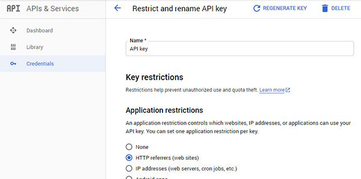
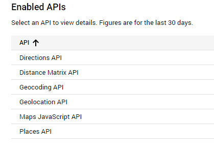
Getting Started
After installing the plugin, you can configure the plugin as below -
Getting Started with Simple Business Directory Pro
Front end submission & favorite settings
How to Enable Claim Listing Feature
Add Custom Fields
After installing 'Simple Business Directory - Pro' plugin, you can manage your directory and items as below -
Simple Steps to get Started:
- After Installing the plguin go to SBD Settings and enter your Google Map API key. Make sure to enable the Google Maps JavaScript API under APIs in the Google API Console.
- Crate your new list from 'Simple Business Directory' --> 'New List'
- Go to your post/page where you want to display list directory and then insert sortcode (by manually or by clicking on Add SBD Shortcode button of your WP text editor).
- Save your page and check the output
- For more details please see below sections
1. Create a New List
- Go to 'Dashboard' --> 'Simple Business Directory' --> 'New List'
- Give your list a title
- You can configure list appearence colors (optional, if not set then defaults will be used) from List Configurations section
- From List Elements section, click on Add New button to add list items
- Give your list item a title, link, subtitle and set other fields/parameters as you like.
- Provide Full Address, it will only be used in google map.
- Latitude & Longitude field will be fill automatically when full address is provided. It will be used for google map.
- You can change google map marker icon by providing a custom marker icon but icon size width 20px height 32px prefered.
- Phone number will be used for tap to call.
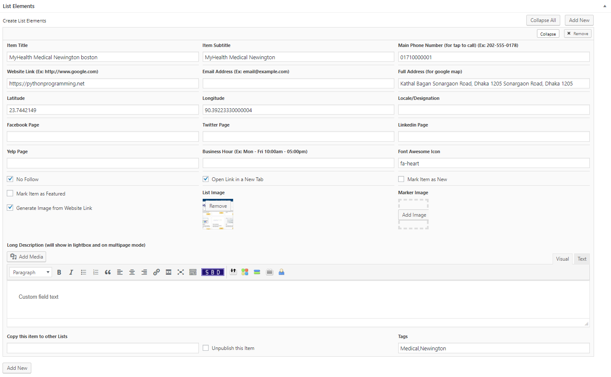
- Add as much items as required by clicking on Add New button repeatedly.
- Collapse all toggle option will collapse/expand all items field area when clicked.
- Collapse toggle button in every items will collapse/expand the individual item
- The checkbox - Unpublish this Item will unpublish the specific item from frontend if checked.
- The checkbox - Generate Image from Website Link will generate a screenshot image of this website when checked & published the list.
- Copy this item to other Lists - When you click on this input field a popup will appear (image is given below) will allow you to choose list where you want to copy this item too. Actually this input field will takes coma(,) seperated list id so the popup will help you to generate the format when you click on Submit button on the popup.
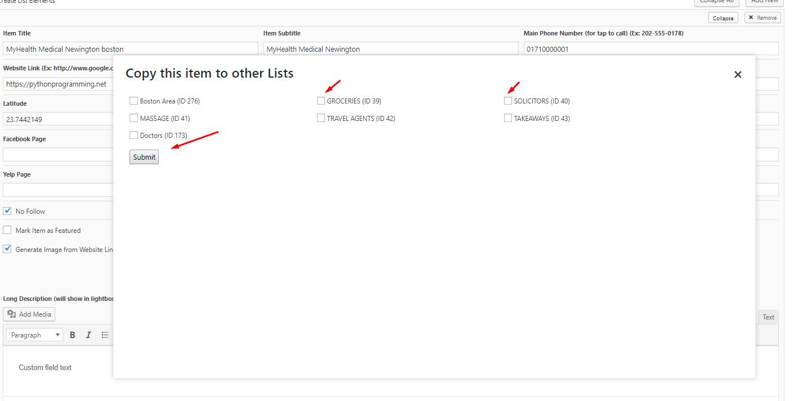
- Tags - When you click on this input field a popup will appear (image is given below) will allow you create tags with auto suggestion with previously created tags. When you have done adding tags just hit Add tags button to add tags to the field. Basically this input field is take coma(,) seperated strings.
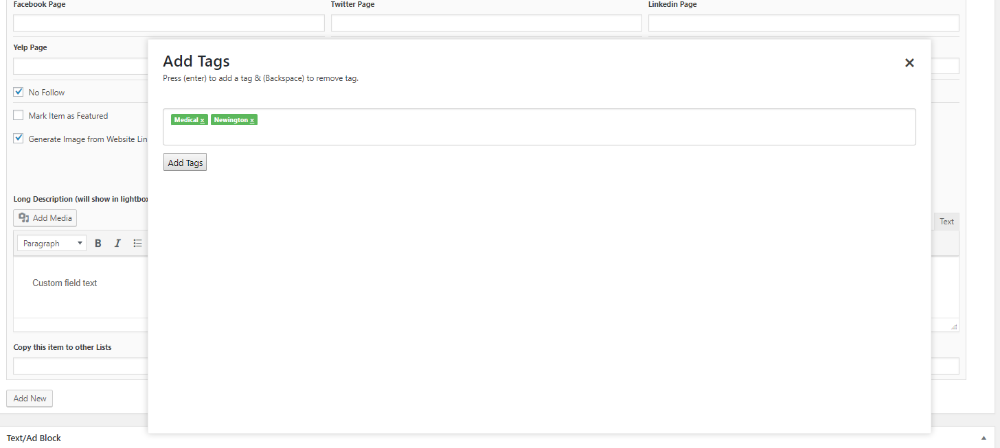
- When you are done, then click on Publish button to save and publish your list.
Priority for list item image is as: Uploaded Image > Default Image
2. Update an Existing List
- Go to 'Dashboard' --> 'Simple Business Directory' --> "Manage List Items"
- Choose a list you want to modify and then click on EDIT (hover on list title to get the EDIT button)
- In EDIT screen, change/tune list contents and configurations as you like
- Finally click on "Update" button to execute your changes.
3. Create List Category
- Go to 'Dashboard' --> 'Simple Business Directory' --> "List Categories"
- Give your new list category a Name, also you can optionally provide Slug.
- Click on "Add New List Category" button
You can also EDIT you list categories from the same screen.
When you will be editing your list item or creating a new one - you will get the category items to pick from the right column.
4. Reordering List Items (Manual order of appearence)
Note: If you want to display your list items in the from end as per your manual ordering, then you must need to set two shortcode parameters, these are
orderby="menu_order" and order="ASC"
- Go to 'Dashboard' --> 'Simple Business Directory' --> "List Ordering"
- Drag and Drop list item by placing your mouse over Order/Move icon
- After dropping list items up/down, they will be saved automatically in that order.
5. Add Area
Whenever you go to
'Dashboard' --> 'Simple Business Directory'
--> "New List"
page you will see a area called Text/Ad Block
You can put some content here & it will display at the very button
of the list page. The screenshort below shows some examples..
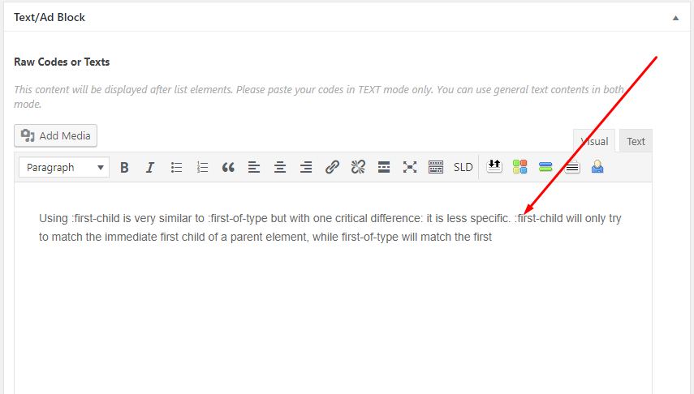
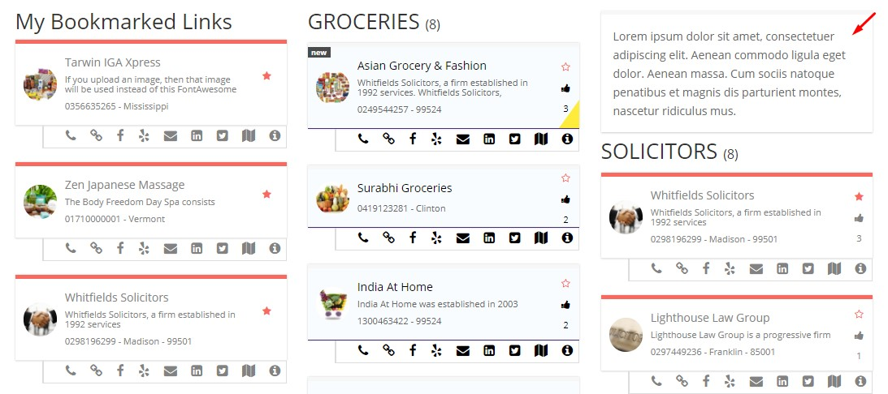
Note: For details about settings and adjustments please visit our Settings section.
How To Display List
To display the lists in your post/page, you need to use shortcode.
You can use shortcode button [in your TinyMCE] editor to pick the shortcode with default parameters. Or, you can use/copy shortcode example from below.
View of Shortcode Generator is as below:
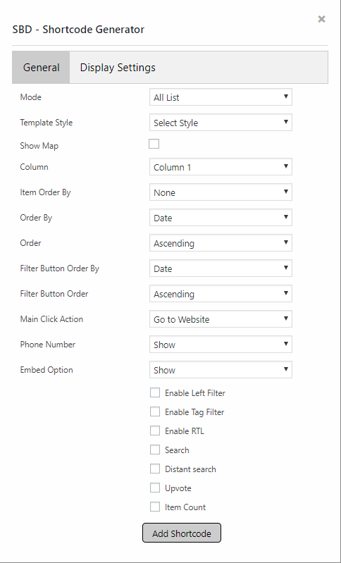
Show Map
In shortcode generator if you checked show map, A select option will appear that will give you option to choose map position eight Top or Right.
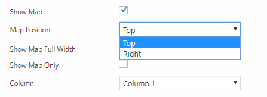
Top Position Map
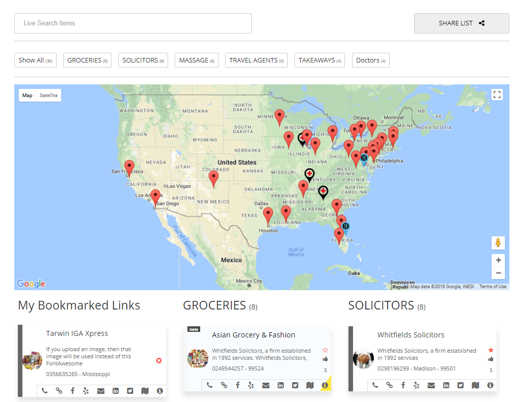
For top Position you will have another option Show Map Full Width
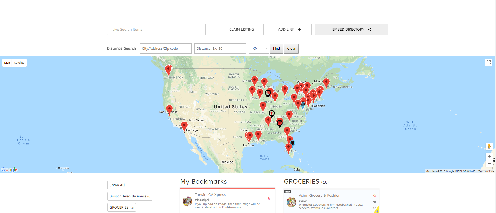
Right Position Map
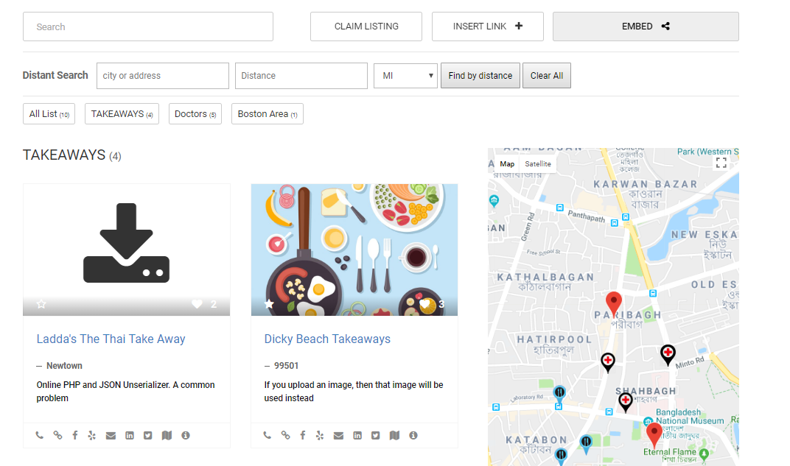
Category Tab
By useing shortcode generator you can generate a shortcode for category tab where all your list will appear as category tab in a page. In order to do this you have to select mode as Category Tab.
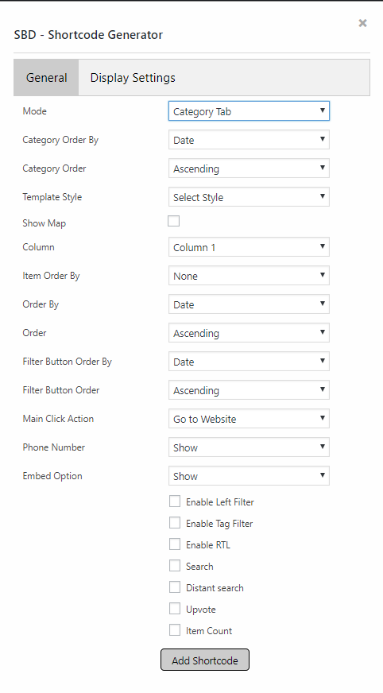
Category tab in frontend.
Enable Left Filter
This option will allow you to place the filter position in left side.
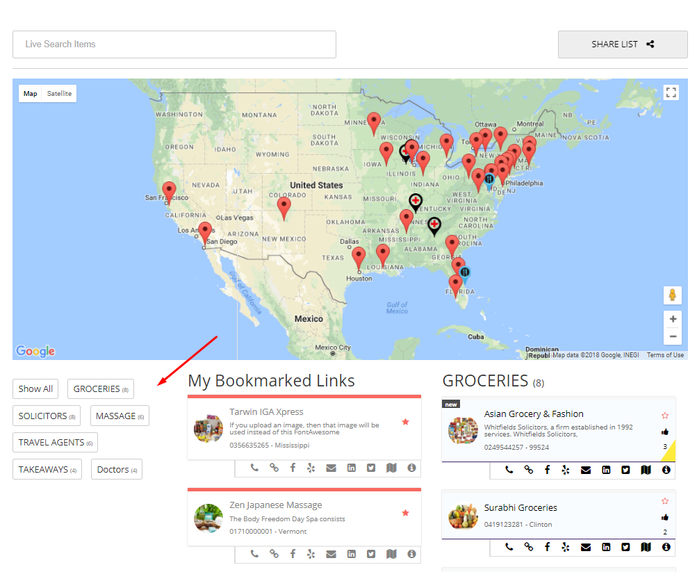
Enable Tag Filter
This option will allow you to add tag filtering.
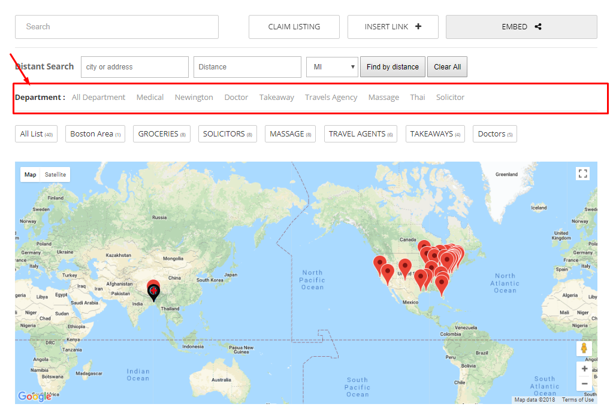
Distant search
This option will allow user to search by distance.
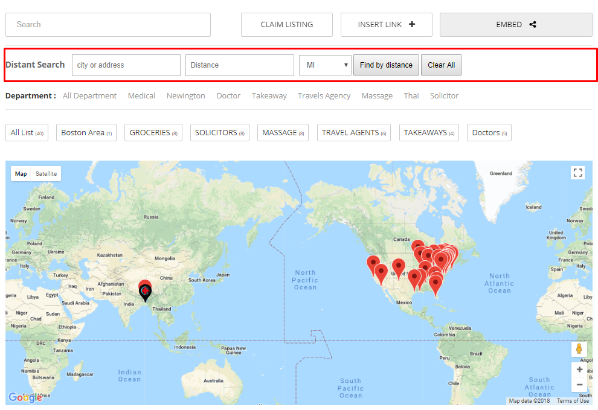
Display Settings
Here you can customize the font-size, line-height for you list title, item title, subtitle.
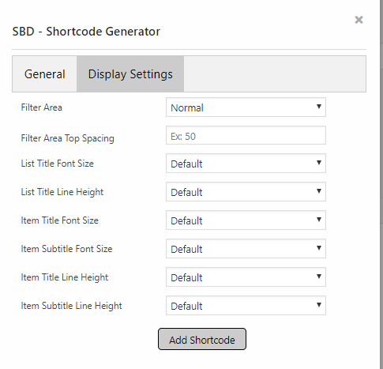
Also you can order category and if you want to remove any category from category tab you have to add a extra parameter category_remove and pass the category id as comma(,) seperated. Example : category_remove="50,51,52"
Shortcode Example
For all the lists:
[qcpd-directory mode="all" style="simple"
column="2" search="true" category=""
upvote="on" item_count="on"
orderby="date" order="DESC"]
For only a single list:
[qcpd-directory mode="one" list_id="75"]
Available Parameters:
1. mode
Value for this option can be set as "one" or
"all".
2. column
Avaialble values: "1", "2", "3" or
"4".
3. style
Avaialble values: "simple", "style-1",
"style-2", "style-3", "style-4",
"style-5", "style-6", "style-7",
"style-8", "style-9", "style-10".
Default is: simple, Example: style="style-2"
4. orderby
Compatible order by values: 'ID', 'author',
'title', 'name', 'type', 'date',
'modified', 'rand' and 'menu_order'.
Default is: menu_order
5. order
Value for this option can be set as "ASC" for Ascending or
"DESC" for Descending order.
Default is: ASC
6. list_id
Only applicable if you want to display a single list [not all]. You
can provide specific list id here as a value. You can also get ready
shortcode for a single list under "Manage List Items"
menu.
7. category
Supply the category slug of your specific directory category.
Example: category="designs"
8. search
Values: true or false. If you want to display on-page search for
items, then you can set this parameter to 'true'. Example:
search="true"
9. upvote
Values: on or off. This options allows upvoting of your list
items.
Example: upvote="on"
10. item_count
Values: on or off. This options allows to display list items count
just beside your list heading.
Example: item_count="on"
11. top_area
Values: on or off. You can hide top area (search and link submit)
from any individual templates if you require. This option is handy
if you want to display multiple template in the same page.
Example: top_area="off"
12. item_orderby
Values: 'upvotes', 'title', 'timestamp', 'random'. You can
order/sort list items by upvote counts or by their titles, or even
by their entry time (descending order). It also support item
randomize display option.
Example: item_orderby="upvotes"
13. mask_url
Values: 'on', 'off'. This option will allow you to hide
promotional/affliate links from the visitors. Visitors will not be
able to see these type of links when they mouseover on the links,
but upon clicking on these links - they will be redirected to the
original/set affliate links.
Example: mask_url="on"
Please note that URL masking may hurt your SEO.
14. paginate_items
Values: "true", "false". This option will allow you to paginate list
items. It will break the list page wise.
Example: paginate_items="true"
[Only applicable for certain templates.]
15. per_page
This option indicates the number of items per page. Default is "5".
paginate_items="true" is required to find this parameter in
action.
Example: per_page="5"
[Only applicable for certain templates.]
16. tooltip
You can enable or disable tooltip by using this parameter. Accepted
values are "true" and "false".
Example: tooltip="true"
[Only applicable for certain templates.]
17. Filter Area
You can set the filter area fixed position using this below
parameter.
Example: filter_area="fixed"
[vailable values: fixed, normal.]
18. Filter Area Top Spacing
You can set Top Spacing for filter area using this below parameter.
Example: topspacing="50"
[Available values: It could be any integer.]
19. Remove category from category tab
You can remove specific category from Category Tab using this below
parameter.
Example: category_remove="50,51,52"
You can add multiple Category ID as coma(,) seperated value.
20. Show Map
You can show google map using this below parameter.
Example: map="show"
21. Show Map Only
You can show only google map using this below parameter.
Example: showmaponly="yes"
22. map_position
You can set map position by this parameter. Value: top, right.
Example: map_position="top"
23. enable_map_fullwidth
You can set map fullwidth by this parameter. Value: true, false.
Example: enable_map_fullwidth="true"
24. enable_left_filter
You can enable left filter by this parameter. Value: true, false.
Example: enable_left_filter="true"
25. Distance Search
You can enable distance search by this parameter. Value: true,
false.
Example: radius="true"
26. enable_tag_filter
You can enable tag filter by this parameter. Value: true, false.
Example: enable_tag_filter="true"
Multipage Mode
For Multipage - first you have enable multipage mode from Simple Business Directory > Settings > Multipage Settings
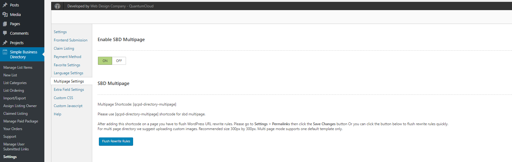
Then add the shortcode [qcpd-directory-multipage] to a page. Its recommended to flush Rewrite Rules to get the multipage work without any error. You can flush Rewrite Rules by clicking the blue button showing above.
After adding the shortcode the root page will display like this below image
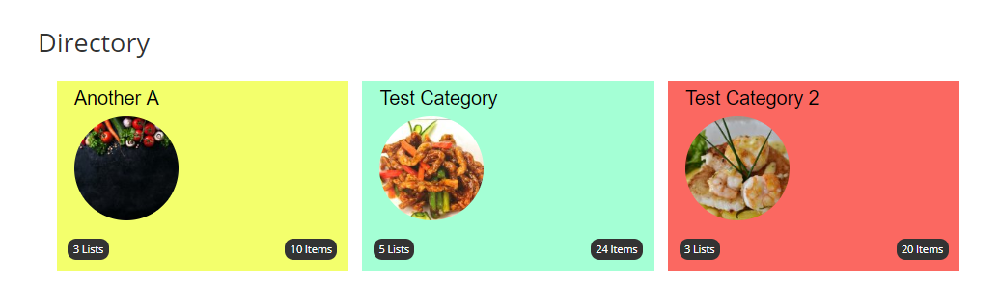
You can also change the multipage template style from multipage setting image is given below.
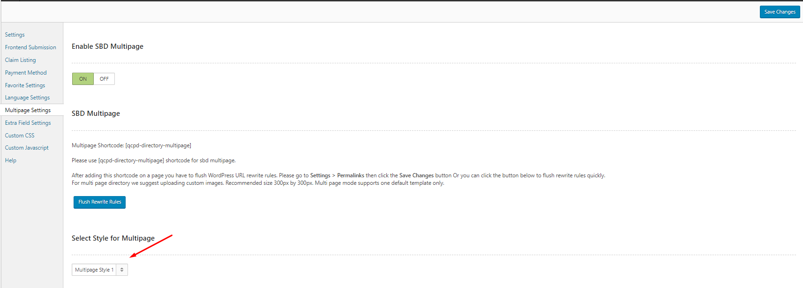
Style 2 front view
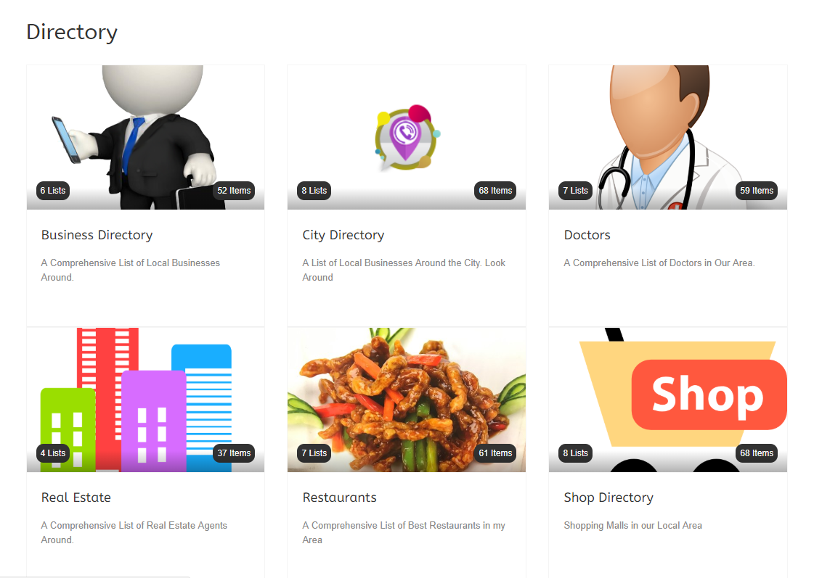
When you click on any category the inner page will display with associated lists of the category.
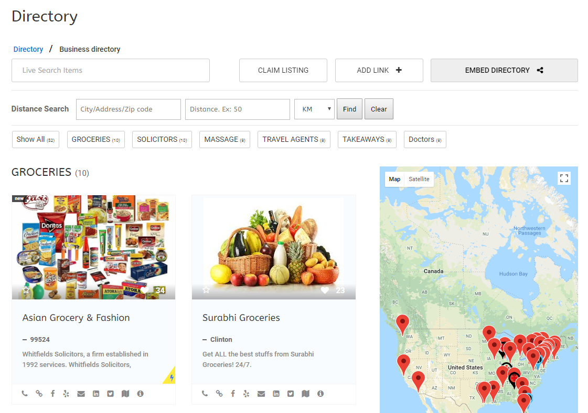
When you click on any list item the details page will display for this item.
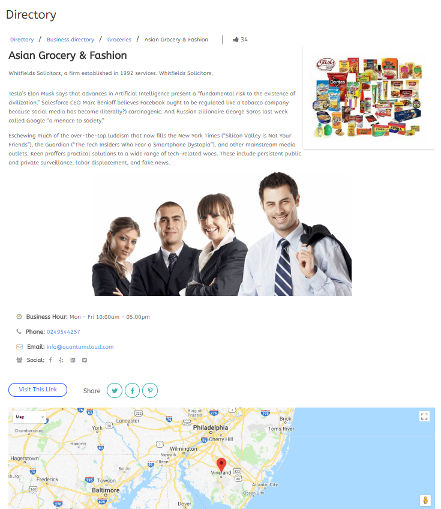
Frontend Submission
Frontend Submission feature will allow your users to submit there list items by registering & logon to dashboard. Now you can populate your lists with users submitted items.
For doing this you have to create 4 pages and add some shortcode on those pages.
Login Page
Shortcode: [sbd_login]
Login From will appear by adding this shortcode on a page. It should
look like the below image.
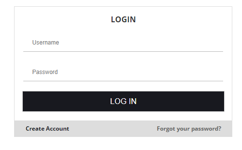
Registration Page
Shortcode: [sbd_registration]
Registration From will appear by adding this shortcode on a page. It
should look like the below image.
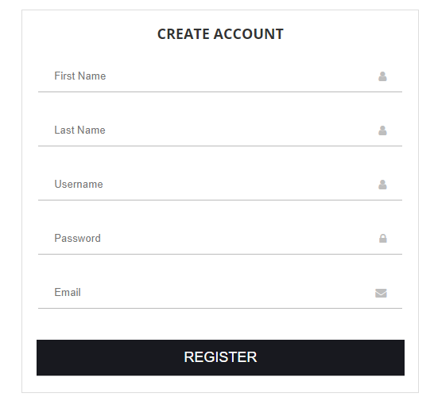
Dashboard Page
Shortcode: [sbd_dashboard]
Dashboard (where people can manage there list items) will appear by
adding this shortcode. Its required logged in to access this page.
It should look like the below image.
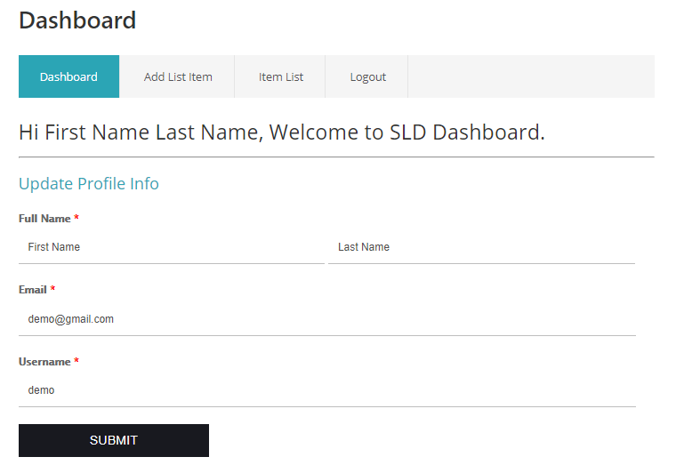
Reset Password Page
Shortcode: [sbd_restore]
User will get password reset option by adding this shortcode on a
page. It should look like the below image.
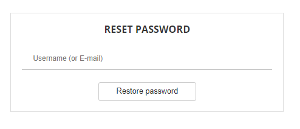
A new page is added on admin side Simple Business Directory >> Manage User Submitted Links where admin can manage there users item.
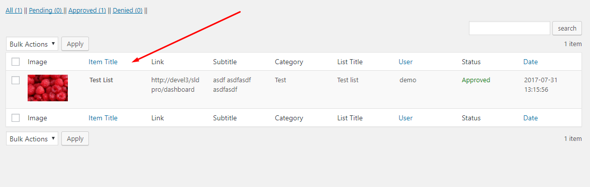
Claim Listing
To enable Claim Listing - you have to go to Simple Business Directory > Settings > Claim Listing & turn on the Enable Claim Listing option. Then you need to create a page and add this shortcode [sbd_claim_listing].
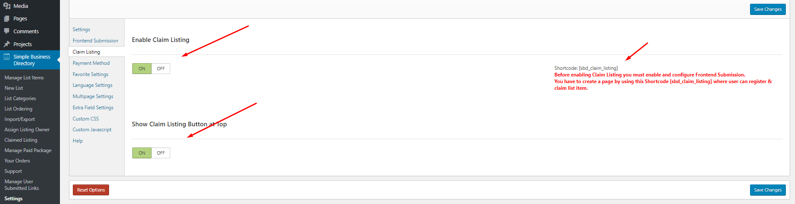
Turn on Show Claim Listing Button at Top option to show claim listing button at top area. See the image below.
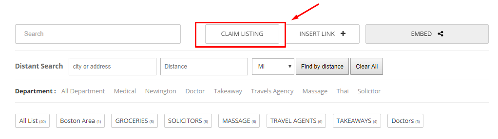
When user click on the button it will redirect to claim listing page.
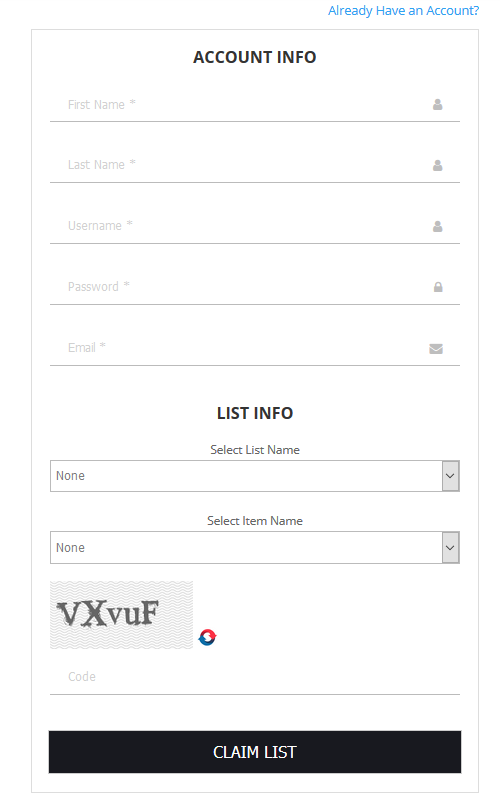
You can set claim listing price from Simple Business Directory > Manage Paid Package to get paid from your client.
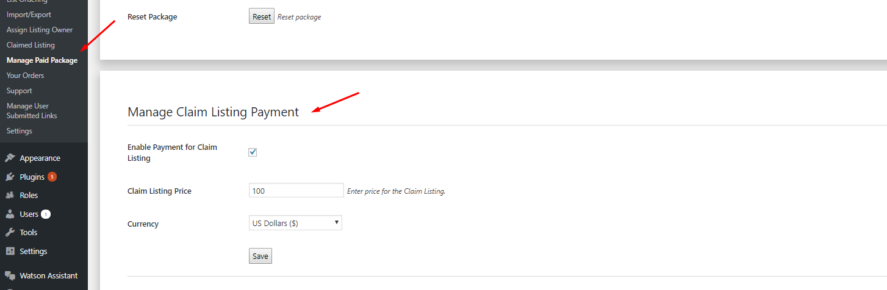
You can find all your claimed item from Simple Business Directory > Claimed Listing.
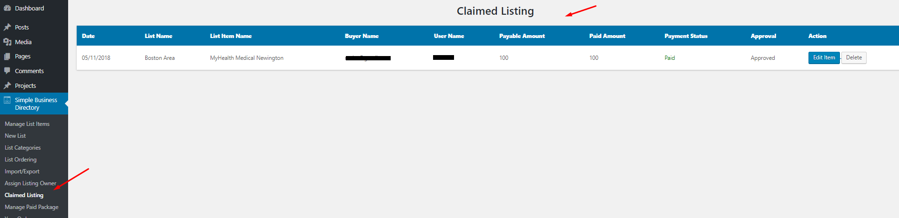
Package
By creating and enabling a package admin can allow user to submit there item after purchasing the package. For creating a package navigate fron admin Simple Business Directory > Package. Its a pretty simple form to create a package within a minute. The package only comes with paypal payment gateway.
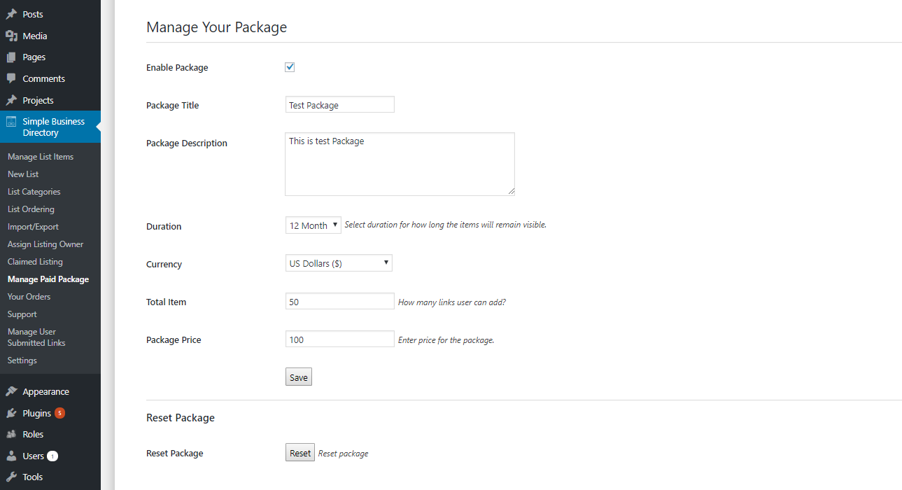
Admin test payment gateway by clicking Enable Test Mode. This package will apprear in the user dashboard by enabling package for frontend submission.
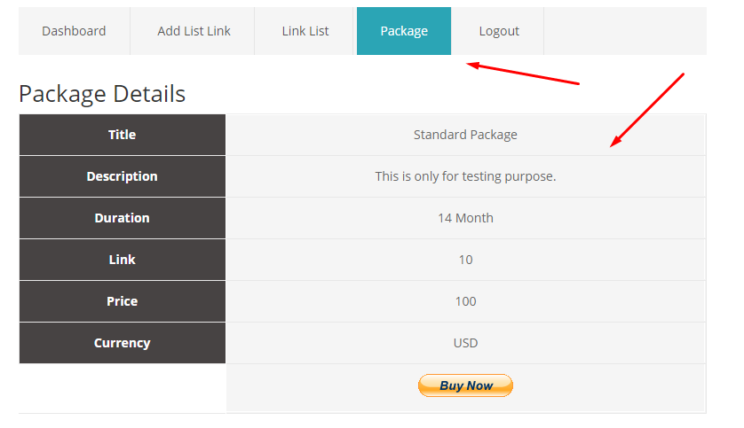
Your Orders
By navigating to Simple Business Directory > Your Orders admin can see the Order list for package.
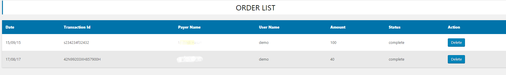
Settings
You can access settings page from - "Dashboard' --> 'Simple Business Directory' --> "Settings"
Settings options are self expanatory as their titles. Available settings options are as below:
1. SBD Admin Email
You have to put a email address for getting notification about new link submission from frontend & sbd user registration.
2. Select Font Setting
You can change the font globaly by selecting a font from here.
3. Enable Top Area
If you set this option to ON, then SEARCH and FILTER bar will be displayed - othewise not.
4. Enable Live Search
This option will allow you to ON/OFF live SEARCH feature.
5. Filter Button Presentation Style
Display list filter button as normal button or carousel.
6. Enable Item Filtering Top
This option will allow you to enable/disable item filtering at top by the list titles.
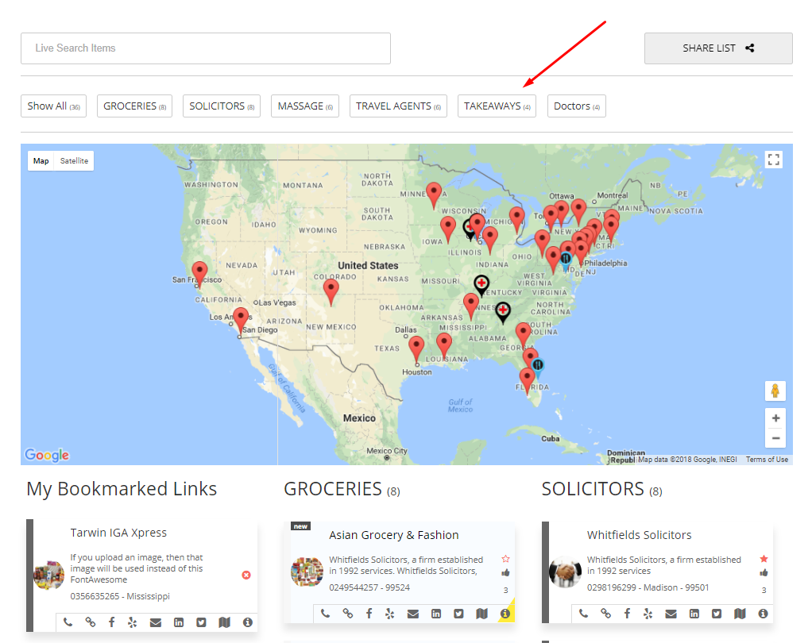
7. Enable Item Filtering Left
This option will allow you to enable/disable item filtering at left by the list titles.
8. Enable RTL Direction
If you turn this option ON, then items and their titles will be alligned from Right to Left (RTL) direction.
9. Enable Embed List Button
If you turn this option ON, then a new button "GENERATE EMBED CODE" will be added at the top of your list. Site visitors can then click this button to generate and copy embed code to use in other sites.
Generated iFrame code can be inserted in any other website or HTML page to display the same list with same functions. Embedded list contents will be served from your website.
Note: If you generate embed code from a site that has HTTP protocol, may not work properly if you paste and use that code in other site that runs on HTTPS protocol, and vice versa.
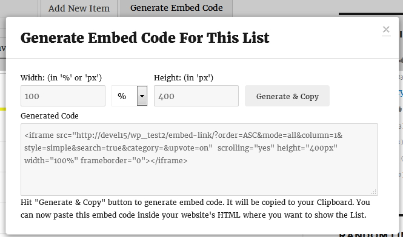
FRONTEND SUBMISSION
1. Enable Front End Submission
By enabling this other frontend submission related setting will appear.
2. Enable Free Frontend Submission
By enabling this user can able to submit there link free.
3. Free Submission Limit
You can specify the limit for free frontend submission. This field only take integer value.
4. Enable Package for Frontend Submission
You can enable your package by enabling this option.
5. Enable Email Notification for New Item Submission
Turn on to get new item submission notification.
6. Registration Captcha
Captcha will apprear in registration by enabling this option.
7. Allow User to Update Profile
By enabling this option user will able to update there profile from dashboard.
8. Allow User to Upload Image
By enabling this option user will able to upload there item image.
9. Disable No Follow
By enabling this option No follow will be disabled.
10. Auto Approve Registered Users
By enabling this option user will automatically approve to submit there item.
11. Auto Approve Item Submission
By enabling this option user item will published immediately without any approval.
Claim Listing
All Claim listing settings is here
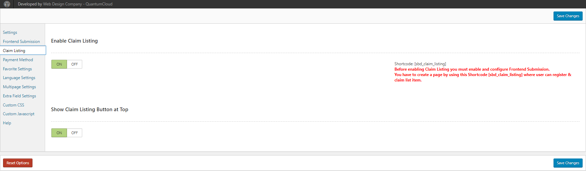
Payment Method
You can set your payment system from here. SBD supports Paypal, Stripe.
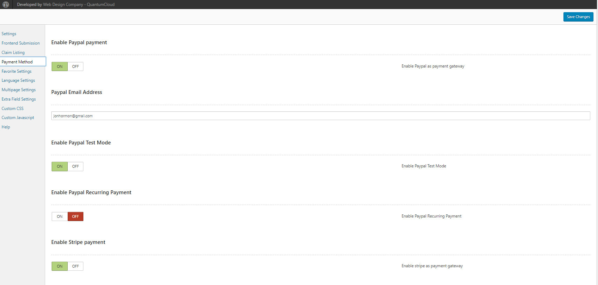
Favorite Settings
From here you can enable favorite feature & also you can change the default language text for favorite.
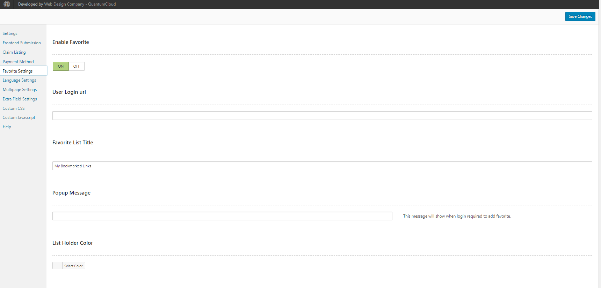
Language Settings
You can change the default language from this settings.
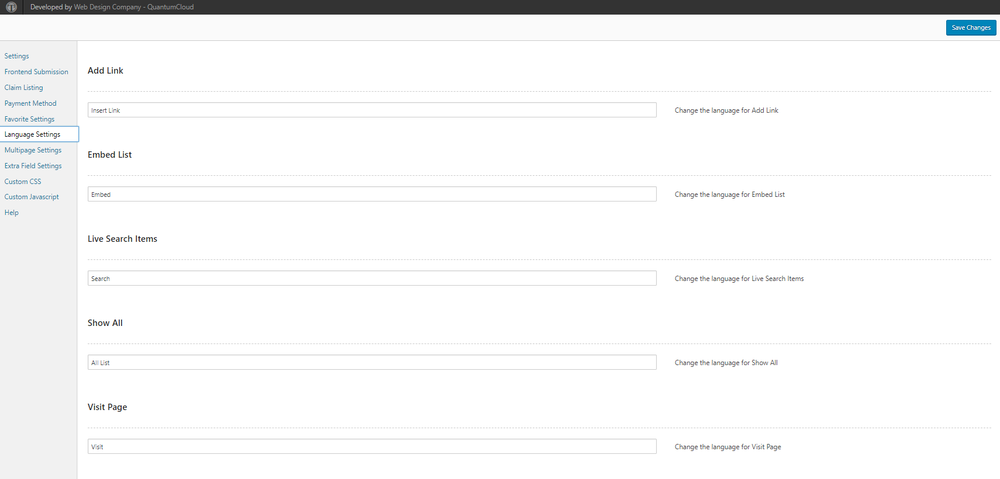
Extra Field Settings
You can add extra field to all list item by this settings. You can add not more then 5 extra field. This field will appear in list create page.
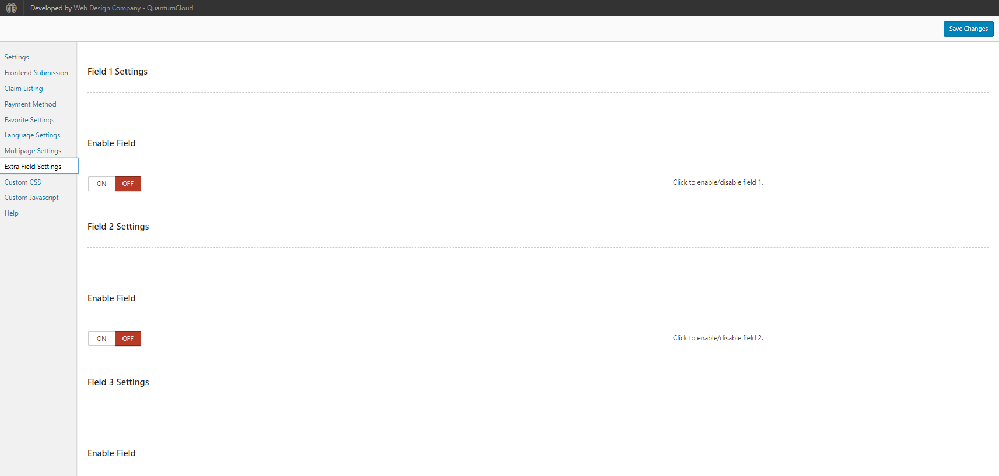
Custom CSS
You can write your own CSS style here to add/override existing templates stylesheets.
Custom JS
You can write your own Javascript code here to add/override existing functionality.
Widgets
You can use 3 shipped widgets to display Most Popular, Latest and Random Links.
To use these widgets, please visit: "Appearence --> Widgets" from
your admin dashboard.
Then pick appropriate widgets from 1. SBD - Latest Links 2. SBD -
Random List 3. SBD - Most Popular List, next drag and drop that
widget in your any available widget area.
Sample view of widgets is as follows:
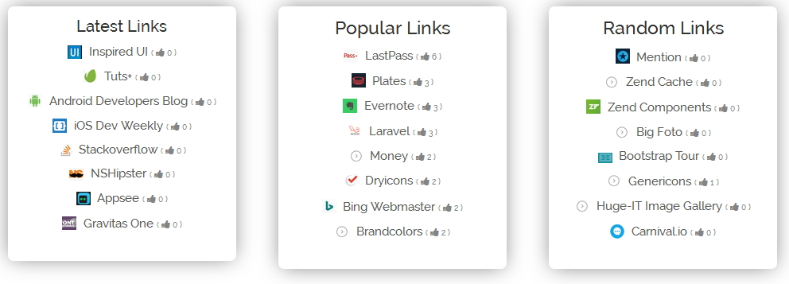
Import
You can use SBDs bulk import feature to add many contents from a single CSV page. To import content, use IMPORT menu under Simple Business Directory.
Please Note: The import feature is still under development. Right now it only allows importing and creating new Lists. Existing Lists will not get updated.
Process:
- First download the above CSV file.
- Add/Edit rows on the top of it, by maintaing proper provided format/fields.
- Finally, upload file in the below form.
Notes:
- It should be a simple CSV file.
- File encoding should be in UTF-8
- File must be prepared as per provided sample CSV file.
Template Overriding
You can change SBD Templates from your theme. Follow the following steps to override SBD templates from your theme
- Unzip the plugin package in your computer and copy the "/simple-business-directory-pro/templates" folder.
- Create a folder named "sbd" inside your ACTIVE theme folder and paste the "templates" folder inside it. Now you can modify the template files inside as required.
Template Styles
Our fully responsive and innovative templates. Couple of examples:
Default Style
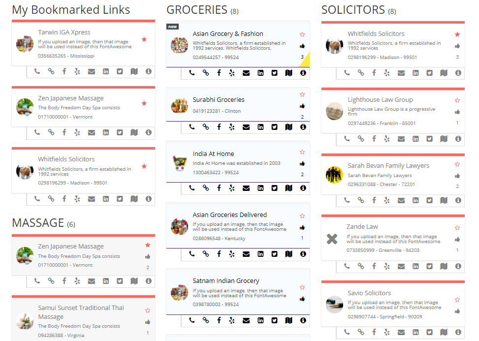
style-1
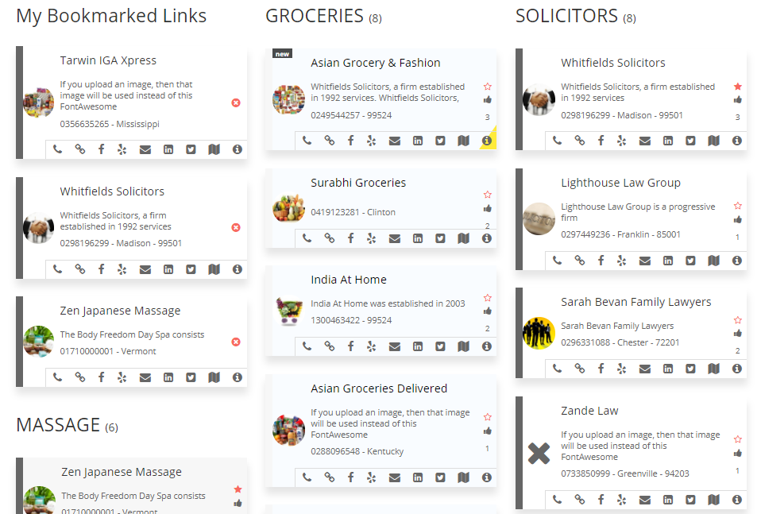
style-2
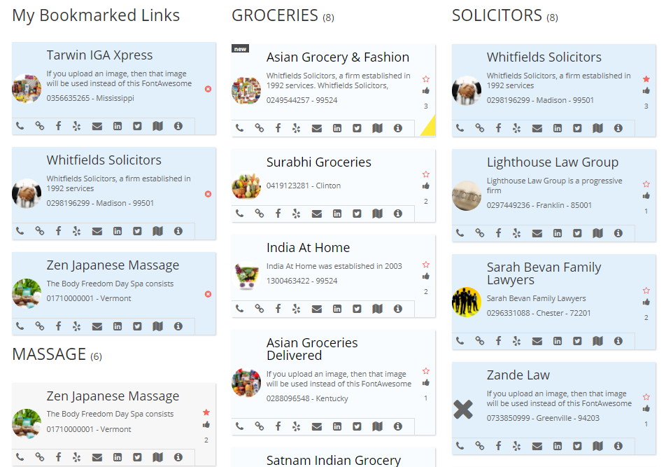
style-3
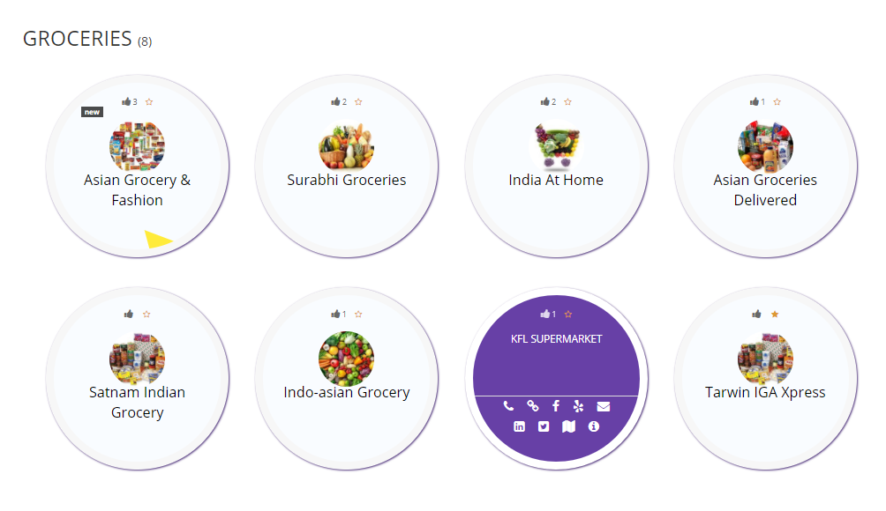
style-4
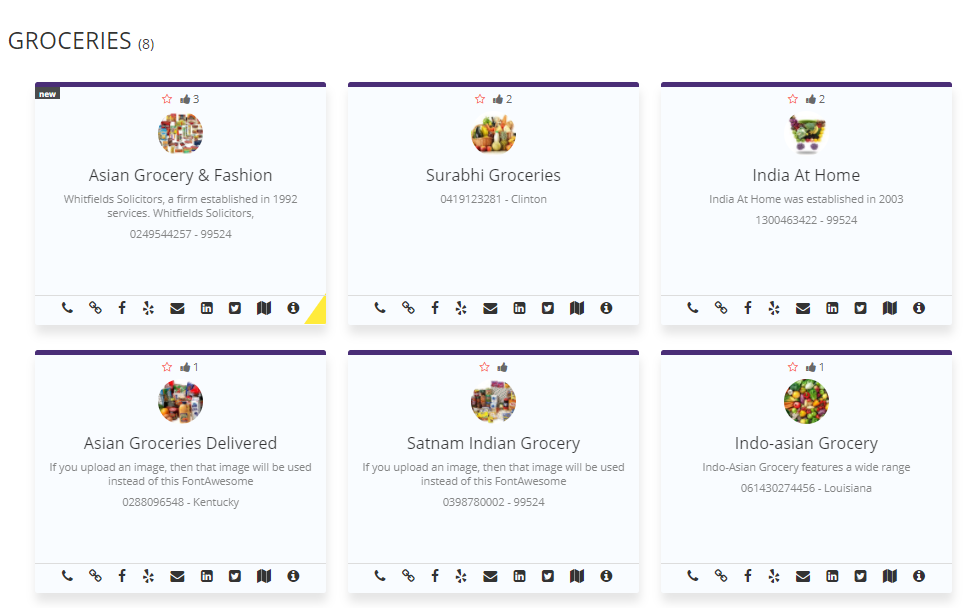
style-5
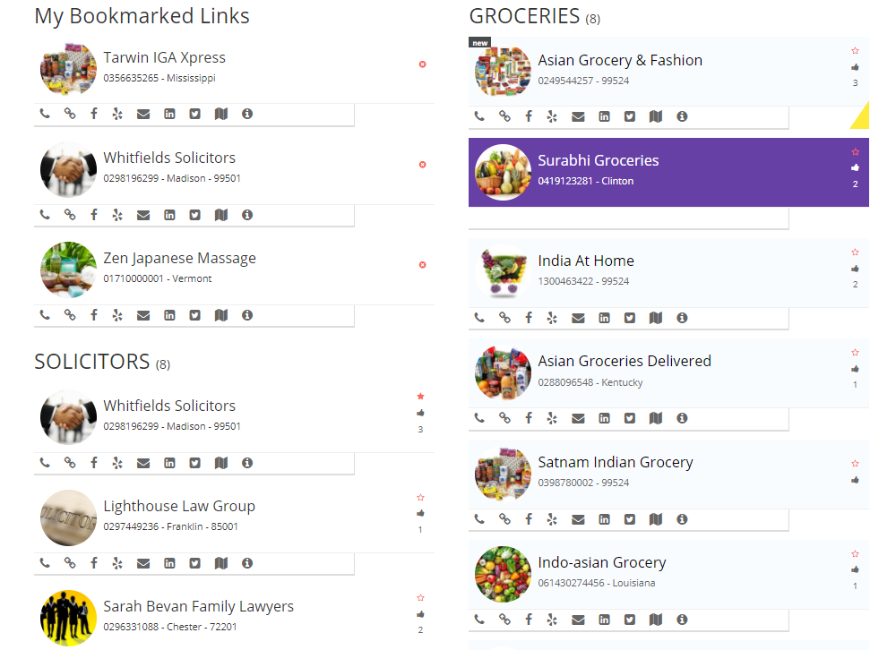
style-6
style-7
style-8
style-9
style-10
Global Searchbar
You can add a search bar to any place of your website. Use the following shortcode to add the search bar.
[qcpd-searchbar post_id="your post id" placeholder="Search"]
Or add do_shortcode('[qcpd-searchbar post_id="your post id" placeholder="Search"]') inside your theme file where you want to display the search bar.
You will also need to create a page and place a regular SBD single page shortcode inside it and add the page's or post's ID in the shortcode to display the results.
Support
To get instant support, you can email us at: quantumcloud@gmail.com
Any feedback or feature requests are most welcome. We will try to incorporate your valuable suggestions with our item.
Developed by Professional Web Design and Development Company QuantumCloud
Partner with us if you need any design or development help with your website!
Sources and Credits
We have shamelessly borrowed code and ideas from the following great open source projects (Thanks!):